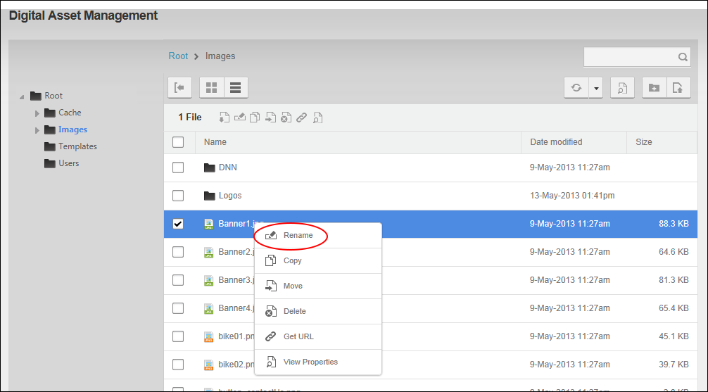
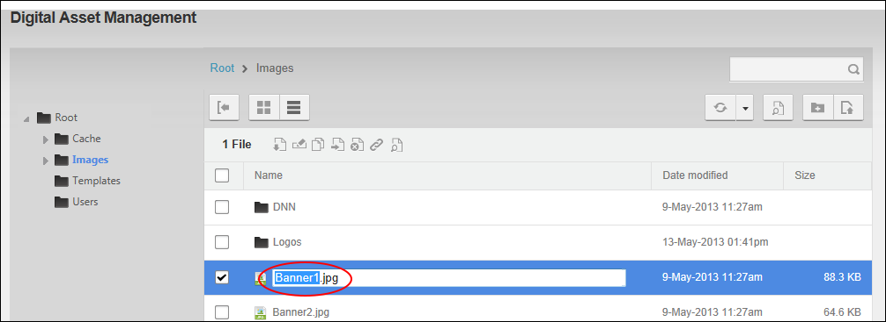

File Management - OR - Go to a Digital Asset Management Pro module.
File Management - OR - Go to a Digital Asset Management Pro module.How to rename a files within the Digital Asset Management Pro module. Users (including anonymous users) must be granted Write to Folder permission to the folder where the file is located. Users (including anonymous users) must be granted Manage Settings permission to the folder where the file is located.
Warning. Renaming a file does not update any references to this file across your site. E.g. If the file is an image that is displayed in the HTML / HTML Pro module, renaming the file will break the path to the image and you will need to manually update the image path by editing the content of that module. Because of this, it is recommended that you only rename a file when it is first uploaded to the site and has not yet to be used on the site.
File Management - OR - Go to a Digital Asset Management Pro module.
